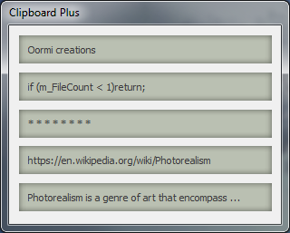
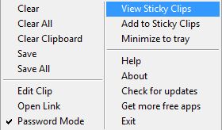
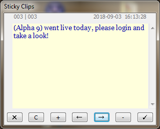
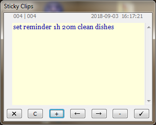
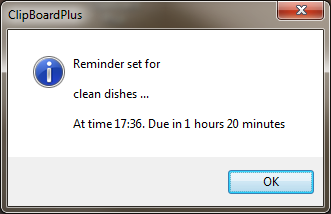

|
|
 |
|
September 2018
|
|
For queries, support, bug reports, feature requests etc, please Email us: Note: Support is minimal and there are no guarantees of any kind. The software is being provided as is. |
IntroductionClipboard Plus is a Windows utility to view and manage the Windows clipboard. It maintains and can display up to five copied items or clips. Clips are arranged from newest to oldest. Clicking on a clip loads it back into the clipboard and it is ready for pasting into another application. It also now becomes the latest clip, and other clips scroll down. To explore more features and functions of this utility, right click on it. This tiny but useful utility is completely free and open sourced. For more such amazing free apps please visit the links on the left. |
|
InstallationDownload the Windows Installer from: GitHub Unzip the downloaded file and run setup.exe. Follow the instructions. Run the program from start menu or by double clicking Clipboard Plus desktop icon. Note: The installer will optionally add a shortcut to the startup folder of Windows, so that Clipboard Plus starts automatically when you start Windows. This is enabled by default. Disabled the auto startup by unchecking the related checkbox on the last screen of the installer.
Please read the License before installing and using this software. |
|
UsageCopy content as usual from any window using Control-C or Control-X or context menu. The clip will appear in the Clipboard Plus list. Copy more to add to the list. Click on any entry in the list to load it in the Windows Clipboard. Paste it anywhere you like. Whenever you copy something, the top most clip will be updated and the old clips scroll down. Note: Only text clips are supported.
Note: The last clip will be lost when a new clip is updated.
Right Click on the main window to bring up the Pop Up Menu. Clear: Clear individual clips by right clicking on the clip, and click Clear. Clear All: Clear all clips. Clear Clipboard: Clear current content of the clipboard without affecting rest of the clips. Note: You cannot undo Clear commands.
Save: Save individual clip as a text file by right clicking on the clip and click Save. Save All: Save all the clips as a text file. Edit Clip: Edit the clip in the edit box that pops up. Click tick mark button to close. The edited clip is loaded into the clipboard. Open link: If the clip is a link, it will be opened in your default browser. Password Mode: Enable or disable password mode. When enabled, it masks the copied passwords. Note: A password must have combination of letters, numbers and special characters to be detected as a password. A clip with spaces or with length greater than 16 characters is not considered as a password. This feature is language dependent. Currently only English and Hindi is supported. It cannot recognize Arabic passwords, for example.
Warning: The hidden password is not really secure. Anyone can unhide it or load it up in the clipboard. This feature simply ensures that a casual onlooker is not able to see it. Clear the clip as soon as it is used.
|
  |
| View Sticky Clips: Opens the Sticky Clips
window just below the ClipBoard Plus window. You can type in
notes, reminders, text, clips etc and save them for later use.
Here is what the buttons do: ✕ : Clear C : Copy + : Save note ← : Next note → : Previous note - : Delete note ✓ : Close |
 |
| It has a neat feature to remind you for something important.
Just type in your note and prefix it with the set reminder
command and time. For example: set reminder 11:30 call someone set reminder 2h 15m go jogging and drop trash set reminder 20m Skype meeting with client Press Add (+) button to set a reminder as above. You should see an ack message showing some details. This is also saved as a sticky clip for later use. The reminder is a one time reminder, it won't keep repeating. As you must have noticed, there are two ways to specify the time. Either as HH:MM, in which case the reminder sounds exactly at that time, or as a duration as xxh yym, in which case the reminder sounds exactly after that duration. Note: Its a bit sensitive about syntax. So do not add words between set reminder and time or do not use words instead of numbers while mentioning time. Do not use AM or PM. It works in 24 hr format. You cannot set a reminder for next day or next week. However, when you use the duration, it may cross over to the next day. Warning: This is not a Windows scheduler event or OS level alarm. If you exit ClipBoard Plus, you will never get reminded. Closing and restarting ClipBoard Plus has the same effect. Reminders are timer based, they are not retained (As for version 1.1.0). You can set up to 20 reminders. The 21st reminder will overwrite the first and so on.
Note: The reminder appears as a message box. If your text is too long, it gets truncated. But you can view the full text in sticky clips. If you are not happy with the voice that announces the reminder, you can replace it with your own jingle or sound by replacing the rem.wav file found in this location: My Documents\Oormi Creations\Clipboard Plus Note: Sticky clips can save up to 300 clips. The clips are saved as delimited text file. If you wish to have more clips, just rename the CBP_StickyClips.txt file, which can be found in: My Documents\Oormi Creations\Clipboard Plus You can also delete it to quickly clear all saved clips. |
  |
Add to Sticky Clips: This will add the clip on which you right clicked to the Sticky Clips. If you wish to use a clip often or want to save it for later, you can do so here. Note that as you copy other things, the clip will disappear from the main list, but it will be there in the Sticky Clips. Minimize to tray: The main window is hidden and can be restored from the tray icon. Help: Access this help online. About: Information about Clipboard Plus. Check for updates: If updates are available the user is prompted to update and the download website is opened in the browser. Get more free apps: Opens the Oormi Creations GitHub repository where you can find more awesome, free and open source apps like this one. Exit: Closes Clipboard Plus. |